Este proyecto nos enseñara como tener varias cámaras y que podamos verlas a la vez.
Tendremos un Pollo que se moverá con las flechas y con el espacio para saltar hacia delante.
La cámara del juego que apunta solo al objeto Árbol que será un prefab y el Pollo tendrá una
camára que verá todo menos al Árbol. Ambas cámaras serán Ortográficas.
Esto lo haremos mediante el Layer que tengan asignados los objetos.
Cuando el Árbol toque al Pollo desaparecerá y hara un sonido.
Para ello necesitaremos una estructura de carpetas que tendrán el
contenido necesario para hacer el juego que lo iremos incluyendo poco a poco:
_GameAssets
• Audio
o Hit.wav.
• Materiales.
• Prefabs.
o Arbol (Capsule).
• Scenes.
o Camaras.
• Scrips.
o Arbol.cs.
o Pollo.cs.
• Materiales.
• Textures para el suelo.
Tendremos que crear dentro de esta escena:
• Suelo.
• Pollo.
• Arbol1 (prefab).
• Arbol2 (prefab).
• Arbol3 (prefab).
La cámara solo podra ver la capa Defaul y Personajes (Layer del Árbol).
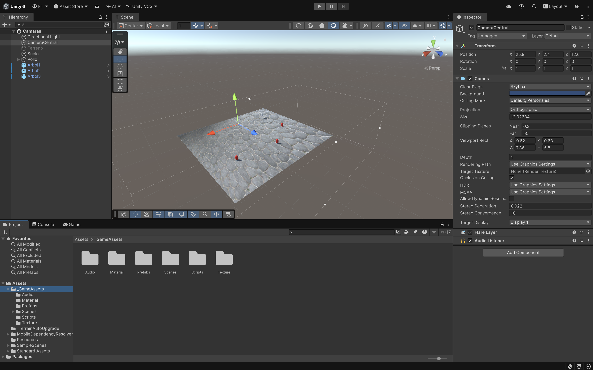
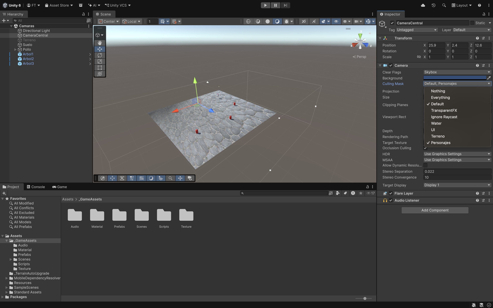
Por lo tanto hay que crear otro Layer que se llame Personajes desde Layer.
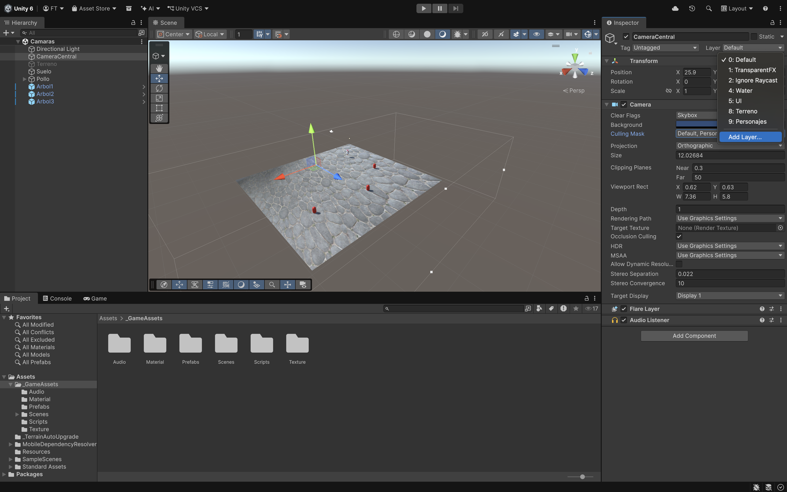
Será un plano con una textura. Crearemos otro Layer que se llame Terreno.
Tendrá un componente AudioSource para que nada más empezar se oiga como golpea el Pollo el suelo
por la caida de la gravedad:
• Play On Awake Chequeado.
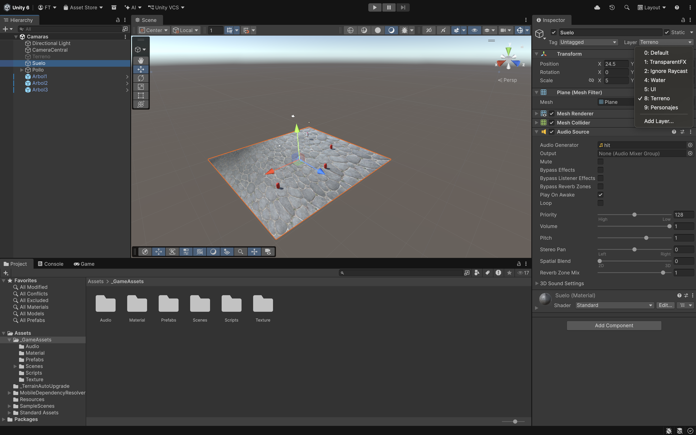
Lo primero que haremos es crear nuestro personaje que será un pollo hecho con los objetos primitivos 3D:
Cubos, esferas...
• Pollo (Cubo) Mirando hacia la Z (adelante). Componentes:
o Mesh Renderer desactivado para que no se vea el cuadrado.
o BoxCollider.
o RigidBody.
o Script Pollo.cs.
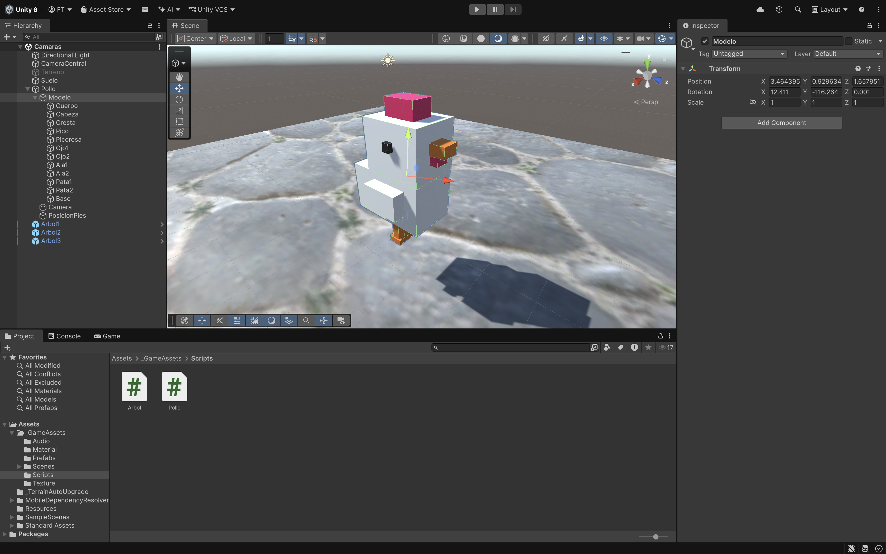
El Pollo tendrá las rotaciones del Rigidbody bloqueadas y estará formado por los siguientes objetos:
• Modelo GO vacío.
o Cuerpo.
o Cabeza.
o Cresta.
o Pico1 y Pico2.
o Ojo1 y Ojo2.
o Ala1 y Ala2.
o Pata1 y Pata2.
o Base.
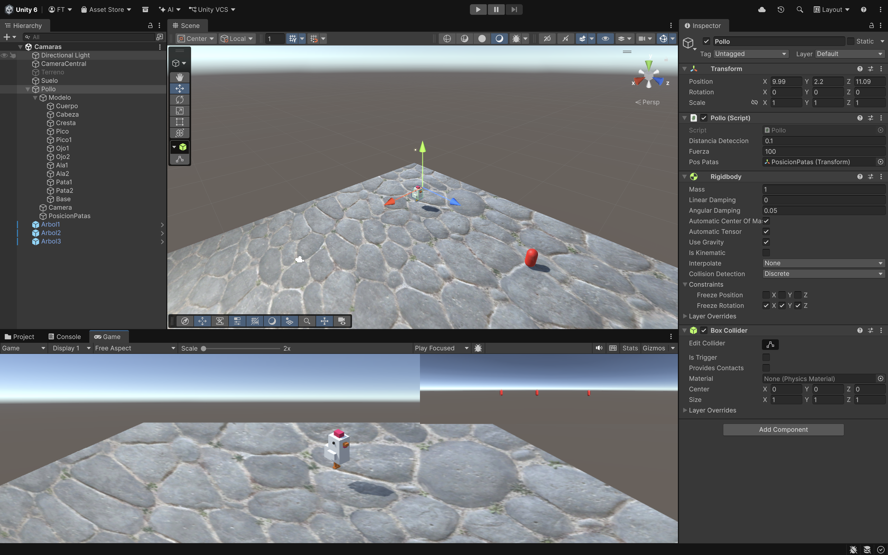
• Camera con el Culling Mask a Mixed y Projection Orthographic.
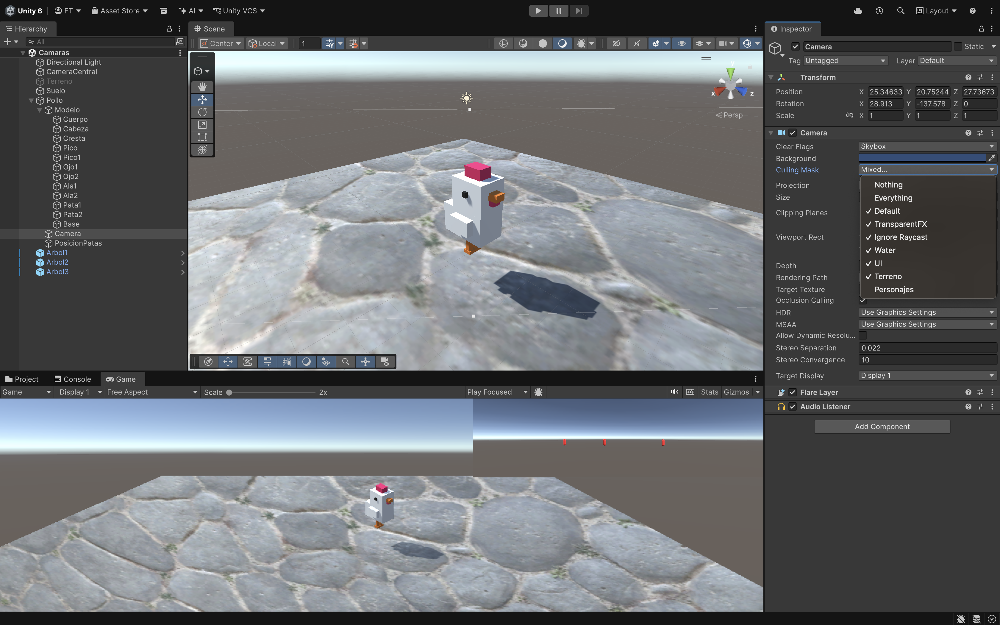
• PosicionPatas que será un GO vacío y la posicionaremos a la altura de las patas para
saber si estamos tocando el suelo para poder saltar con el espacio.
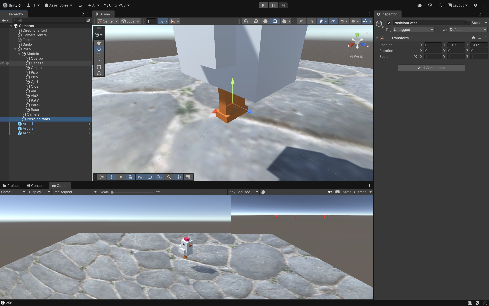
Necesitamos variables que pasaremos por parámetro y una variable para recoger el Rigidbody:
• float distanciaDeteccion.
• int fuerza.
• Transform posPatas.
Start().
• Recogemos el Rigidbody del Pollo.
Update().
• Si damos al espacio y EstoyEnSuelo().
o Añadir una fuerza hacia arriba (Y) y hacia delante(Z) por la fuerza.
• Si da tecla izquierda.
o Añadir una fuerza hacia izquierda en negativo (X) y hacia arriba(Y) por la fuerza.
• Si da tecla derecha.
o Añadir una fuerza hacia derecha en positivo (X) y hacia arriba(Y) por la fuerza.
• Si da tecla abajo.
o Añadir una fuerza hacia atrás en negativo (Z) y hacia arriba(Y) por la fuerza.
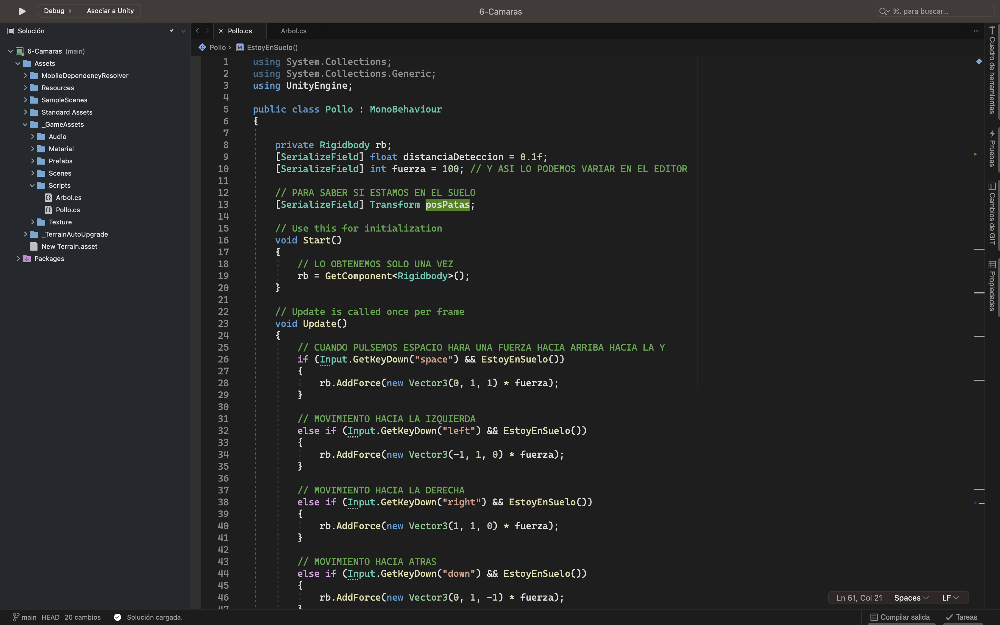
Método EstoyEnSuelo().
Si estoy tocando el Suelo podre saltar cuando le de al espacio. Se podría hacer de dos maneras:
1ª Manera:
• Recoger la capa del suelo.
• Inicializar variable enSuelo a false.
• Hacemos una esfera con Physics.CheckSphere desde la posicion de las patas con una cierta
distancia y la capa que recogimos.
• Y retornamos la variable enSuelo y si es true es que lo estoy tocando.
2ª Manera:
• Recoger todos los Collider en un array con Physics.OverlapSphere .
• Y si la longitud > 0 en senSuelo sera true y se retornamos el valor.
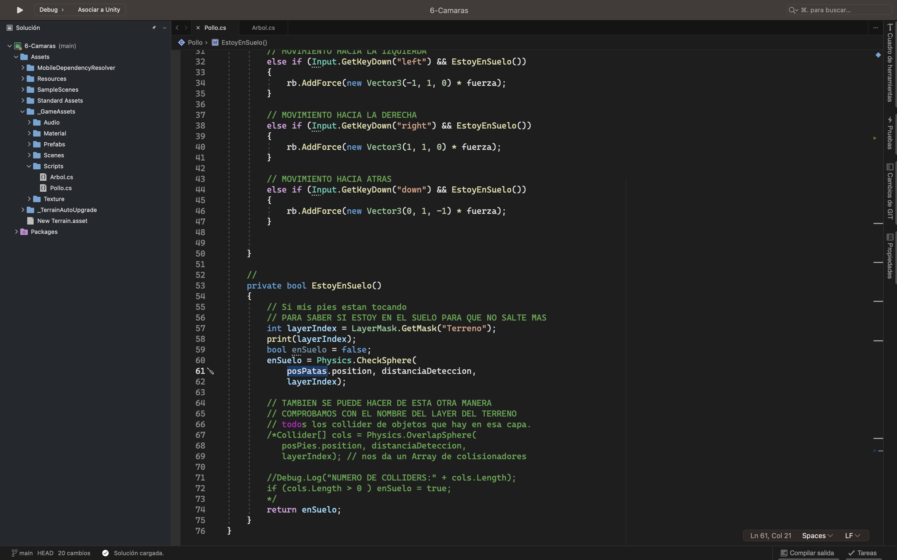
Haremos un objeto para que cuando el Pollo se choque con él se destruira el objeto y hara un sonido. Le
hacemos como Prefab para poner varios en el plano.
Tendrá un componente de Capsule Collider con el IsTrigger chequeado.
En el Layer del Arbol añadimos un Layer que se llame "Personajes".
Cuando tenemos el IsTrigger chequeado nos deja atravesar al objeto con el que colisionamos.
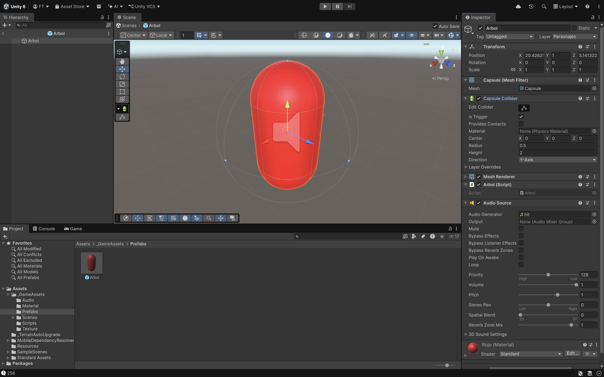
Tiene asociado un script Arbol.cs:
Start().
• Recoger el AudioSource.
OnTriggerEnter().
• Hacemos un sonido.
• Y llamamos con el Invoke a un método DestruirObjeto() al cabo de 1 segundo que destruira
el objeto.
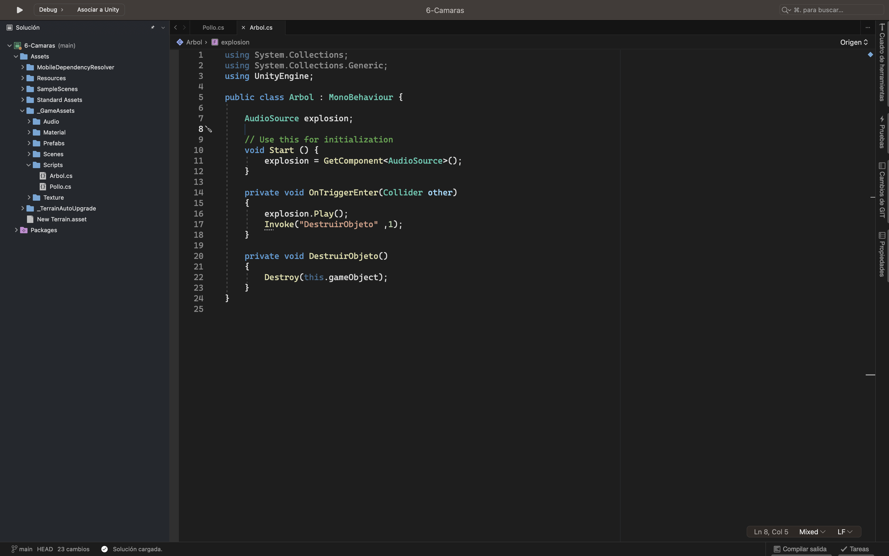